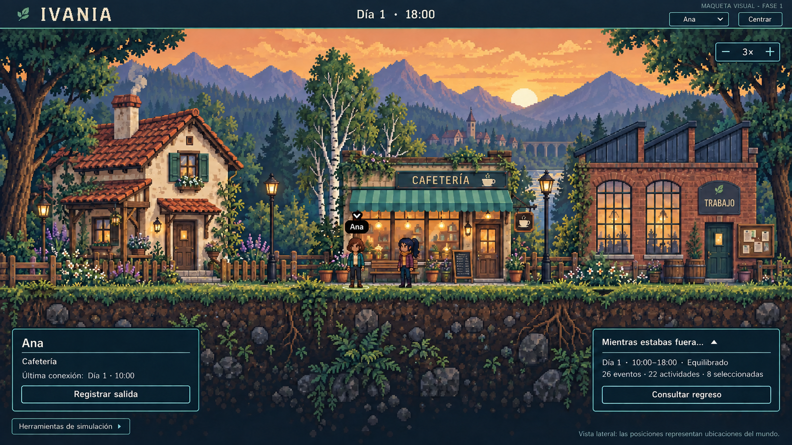
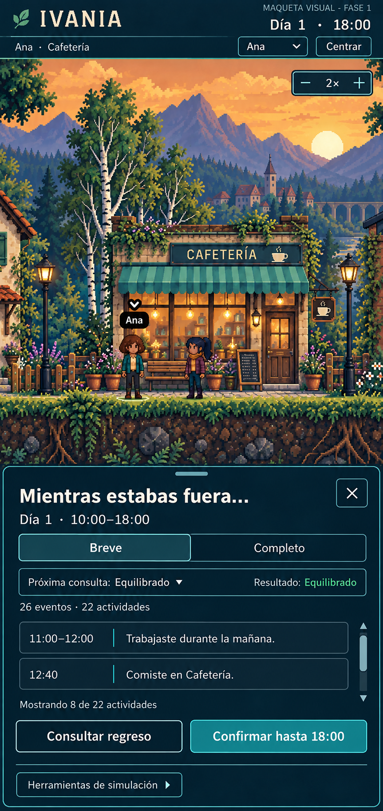

IVANIA, entre árboles.
Una localidad lateral de pixel art cálido: tres lugares reconocibles, un suelo continuo y personajes pequeños dentro de un mundo que ocupa la pantalla.
Maquetas visuales. Los controles dentro de las imágenes están dibujados y no funcionan. Esta galería está aislada de la aplicación actual. Pulsa una imagen para verla a tamaño completo.
Escritorio · El mundo como protagonista


Pantalla estrecha · Cámara y hoja inferior
La cámara conserva la escala de los personajes. Arrastrar permitirá explorar la localidad; centrar recuperará la ubicación seleccionada. Abrir el resumen no cambia el estado del mundo ni captura un nuevo corte.
- Ana: cabello corto y chaqueta turquesa.
- Sofía: coleta oscura, ciruela y ocre.
- Tiles de 16 px; personajes de 16 × 32 px.
- Escala entera; textos HTML legibles e independientes.
- Solo reposo decorativo y cambios de ubicación instantáneos.
Assets separados en Phaser: terreno, edificios, vegetación, fondos, personajes y cámara. HTML/CSS: HUD, selección, fichas, resumen y acciones.
Las imágenes definen la intención artística; no son spritesheets listos para producción. La implementación utilizará piezas originales a resolución nativa, nunca esta captura como fondo único con botones falsos.
Leer escala, interacciones, plan de assets y límites
Ver los prompts y la procedencia de las imágenes